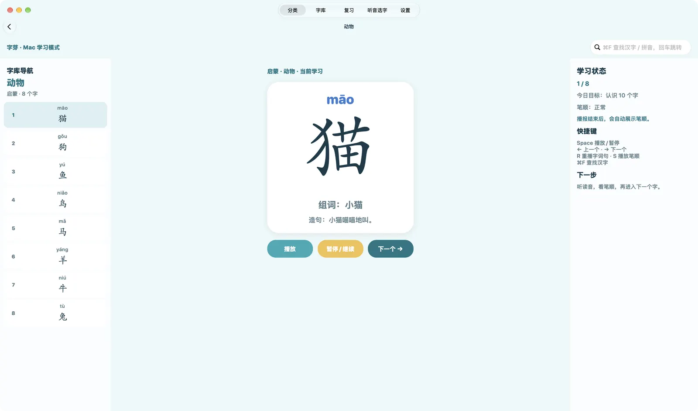
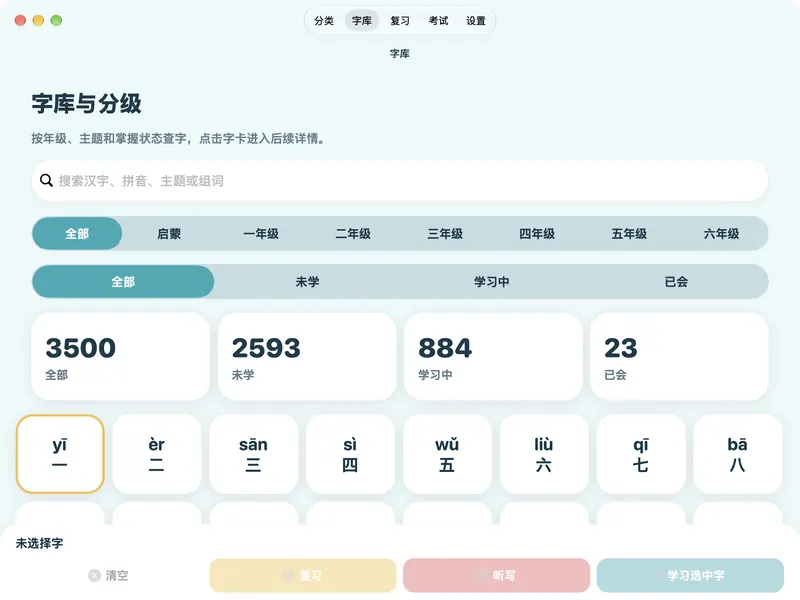
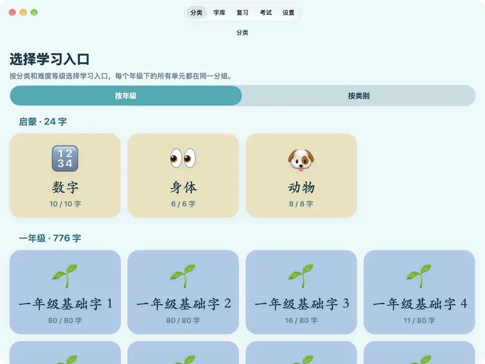
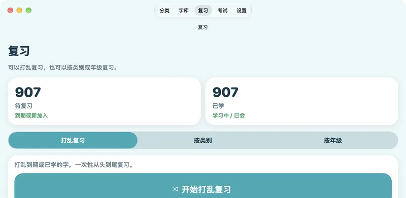
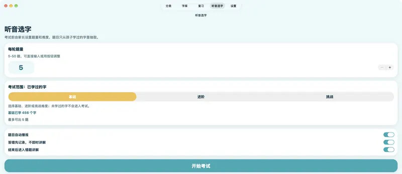

打乱复习
把到期和学过的字打乱，从头到尾过一遍；也可以按类别或年级复习。
中文识字启蒙 · iPhone / iPad / Mac
字芽陪孩子认识常用汉字：看大大的楷体字，听读音、组词和造句，再看字形一笔一笔描出来。3500 个字从启蒙排到六年级，不联网、没有广告，家长可以放心交给孩子。
翻一翻
下面的字、组词和造句都来自字芽的字库。正面是字，背面是拼音、组词和一句小句子。
学一个字
楷体大字配上拼音，字形规范清楚，适合刚开始认字的眼睛。
依次朗读字、组词和造句，可以重听，也可以慢速播放。部分常用字配有自然人声读音（AI 语音合成），其余使用系统离线语音。
朗读结束后自动播放笔顺动画，速度可以调，也可以关掉。
学过的字进入复习，隔一段时间再出现一次，慢慢记牢。

字库
按年级分成 46 个学习单元，也可以按身体、动物、植物、饮食、自然等 100 多个主题来学。字库页能用汉字、拼音或组词搜索，并按「未学 / 学习中 / 已会」筛选。


复习与小测
把到期和学过的字打乱，从头到尾过一遍；也可以按类别或年级复习。
听读音，从几个字里选出对的那个。家长先定好题量（5–50 题）和难度（基础 / 进阶 / 挑战），题目只从孩子学过的字里出。
答错先记下来，不当场打断；做完一轮再一起看错题。
学了多少字、哪些还在学、哪些已经会了，错题记录也能回看。


给家长
不需要账号，也不需要联网。学习记录只保存在这台设备上，不会上传。
打开就是学习，没有广告，也没有付费解锁。
识字页使用系统楷体，笔画起收清楚，贴近课本字形。
设定每日学习目标、考试题量和复习方式，进度一目了然。
春芽、水墨、海屿、糖果、星夜，挑一个孩子喜欢的颜色。
空格播放或暂停，左右方向键换字，⌘F 查字，大屏幕陪读更方便。
下载
字芽没有在应用商店上架，安装包放在 GitHub 上分享。当前版本 1.2。
App 的界面和字库都是简体中文。 查看所有版本